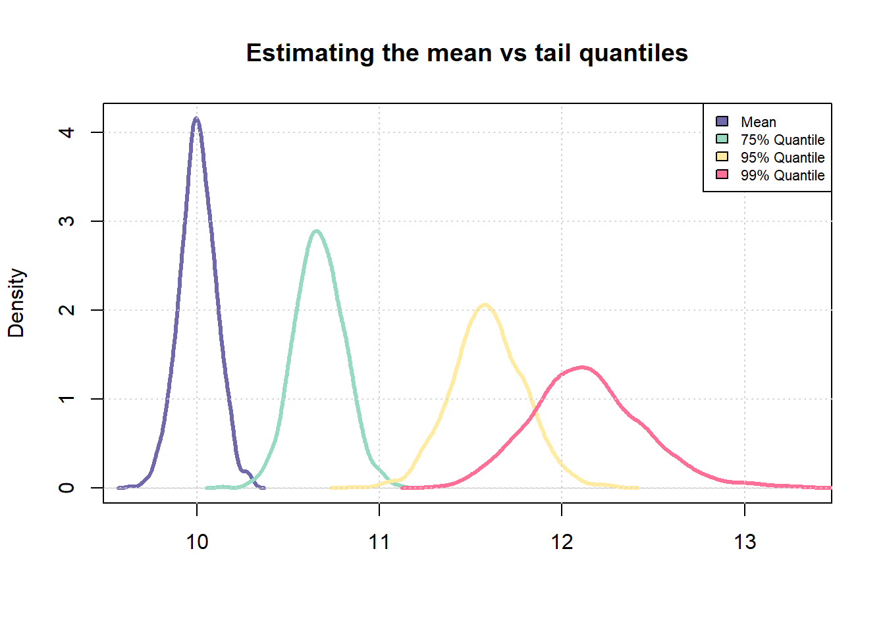
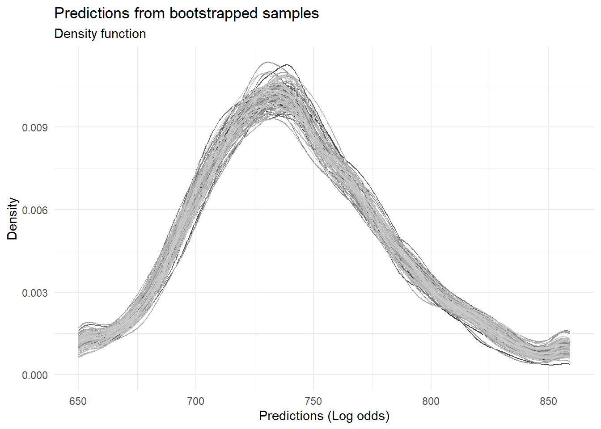

Understanding Variability in Credit Score Predictions
R
Credit Risk Analytics
Bootstrapping
Published
November 15, 2024
Credit scoring models work well in the middle of the score distribution but often become less reliable at the extremes where data is sparse. This post shows how to use bootstrapping to measure prediction variability across different score ranges – helping you identify where your model is most dependable.
Why Estimation Variance Matters
Smaller sample sizes lead to higher variance in estimates, especially for extreme values. While statistics like means remain stable with limited data, tail percentiles (95th, 99th) show much more volatility. This matters for credit scoring, where very high and very low scores represent these unstable tail regions.
# Number of samples to be drawn from a probability distributionn_samples <-1000# Number of times, sampling should be repeatedrepeats <-100# Mean and std-dev for a standard normal distributionmu <-5std_dev <-2# Samplesamples <-rnorm(n_samples * repeats, mean =10)# Fit into a matrix like object with `n_samples' number of rows # and `repeats` number of columnssamples <-matrix(samples, nrow = n_samples, ncol = repeats)# Compute mean across each columnsample_means <-apply(samples, 1, mean)# Similarly, compute 75% and 95% quantile across each columnsample_75_quantile <-apply(samples, 1, quantile, p =0.75)sample_95_quantile <-apply(samples, 1, quantile, p =0.95)sample_99_quantile <-apply(samples, 1, quantile, p =0.99)# Compare coefficient of variationsd(sample_means)/mean(sample_means)
[1] 0.01017306
sd(sample_75_quantile)/mean(sample_75_quantile)
[1] 0.0127586
sd(sample_95_quantile)/mean(sample_75_quantile)
[1] 0.01873297
# Plot the distributionscombined_vec <-c(sample_means, sample_75_quantile, sample_95_quantile, sample_99_quantile)plot(density(sample_means), col ="#6F69AC", lwd =3, main ="Estimating the mean vs tail quantiles", xlab ="", xlim =c(min(combined_vec), max(combined_vec)))lines(density(sample_75_quantile), col ="#95DAC1", lwd =3)lines(density(sample_95_quantile), col ="#FFEBA1", lwd =3)lines(density(sample_99_quantile), col ="#FD6F96", lwd =3)grid()legend("topright", fill =c("#6F69AC", "#95DAC1", "#FFEBA1", "#FD6F96"), legend =c("Mean", "75% Quantile", "95% Quantile", "99% Quantile"), cex =0.7)

The plot shows how uncertainty increases dramatically when estimating extreme values. The distribution for the mean (purple) is much narrower than for the 99th percentile (pink). This directly translates to credit scoring – where very high or low scores have greater uncertainty.
# Load sample data (sample of the lending club data)sample <-read.csv("http://bit.ly/42ypcnJ")# Mark which loan status will be tagged as defaultcodes <-c("Charged Off", "Does not meet the credit policy. Status:Charged Off")# Apply above codes and create targetsample %<>%mutate(bad_flag =ifelse(loan_status %in% codes, 1, 0))# Replace missing values with a default valuesample[is.na(sample)] <--1# Get summary tallytable(sample$bad_flag)
0 1
8838 1162
We’re using Lending Club data with charged-off loans marked as defaults. The class imbalance shown is typical in credit portfolios and contributes to prediction challenges at distribution extremes.
Implementing Bootstrap Resampling Strategy
We’ll create 100 bootstrap samples to measure how model predictions vary across the score range. This technique creates multiple simulated datasets to measure prediction uncertainty without collecting additional data.
# Create 100 samplesboot_sample <-bootstraps(data = sample, times =100)head(boot_sample, 3)
Each bootstrap sample contains random draws (with replacement) from our original data, creating slight variations that reveal model sensitivity to different data compositions.
Developing the Predictive Model Framework
We’ll use logistic regression – the standard for credit risk models due to its interpretability and regulatory acceptance. Our model includes typical credit variables like loan amount, income, and credit history metrics.
glm_model <-function(df){# Fit a simple model with a set specification mdl <-glm(bad_flag ~ loan_amnt + funded_amnt + annual_inc + delinq_2yrs + inq_last_6mths + mths_since_last_delinq + fico_range_low + mths_since_last_record + revol_util + total_pymnt,family ="binomial",data = df)# Return fitted valuesreturn(predict(mdl))}# Test the function# Retrieve a data frametrain <-analysis(boot_sample$splits[[1]])# Predictpred <-glm_model(train)# Check outputrange(pred) # Output is on log odds scale
[1] -20.022728 1.124628
The function returns predictions in log-odds, which we’ll later convert to a more intuitive credit score scale.
Iterative Model Training and Prediction Collection
# First apply the glm fitting function to each of the sample# Note the use of lapplyoutput <-lapply(boot_sample$splits, function(x){ train <-analysis(x) pred <-glm_model(train)return(pred)})# Collate all predictions into a vector boot_preds <-do.call(c, output)range(boot_preds)
[1] -141.189195 8.873295
# Get outliersq_high <-quantile(boot_preds, 0.99)q_low <-quantile(boot_preds, 0.01)# Truncate the overall distribution to within the lower 1% and upper 1% quantiles# Doing this since it creates issues later on when scaling the outputboot_preds[boot_preds > q_high] <- q_highboot_preds[boot_preds < q_low] <- q_lowrange(boot_preds)
[1] -5.0581226 -0.2312987
# Convert to a data frameboot_preds <-data.frame(pred = boot_preds, id =rep(1:length(boot_sample$splits), each =nrow(sample)))head(boot_preds)
pred id
1 -3.5243889 1
2 -5.0220877 1
3 -1.7385793 1
4 -1.9862655 1
5 -1.5898113 1
6 -0.5679697 1
We apply our model to each bootstrap sample and collect the predictions, then truncate extreme values (beyond 1st and 99th percentiles) to remove outliers – similar to capping techniques used in production credit models.
Transforming Predictions to Credit Score Scale
Now we’ll convert log-odds to a recognizable credit score using the industry-standard Points to Double Odds (PDO) method. Using parameters similar to real credit systems (PDO=30, Anchor=700), we transform our predictions into intuitive scores where higher numbers indicate lower risk.
scaling_func <-function(vec, PDO =30, OddsAtAnchor =5, Anchor =700){ beta <- PDO /log(2) alpha <- Anchor - PDO * OddsAtAnchor# Simple linear scaling of the log odds scr <- alpha - beta * vec # Round offreturn(round(scr, 0))}boot_preds$scores <-scaling_func(boot_preds$pred, 30, 2, 700)# Chart the distribution of predictions across all the samplesggplot(boot_preds, aes(x = scores, color =factor(id))) +geom_density() +theme_minimal() +theme(legend.position ="none") +scale_color_grey() +labs(title ="Predictions from bootstrapped samples", subtitle ="Density function", x ="Predictions (Log odds)", y ="Density")

Each gray line shows the score distribution from a different bootstrap sample. Where lines cluster tightly, our predictions are stable; where they diverge, we have higher uncertainty.
Quantifying Prediction Uncertainty Across Score Ranges
Now we can directly measure how prediction reliability varies across score ranges by calculating standard deviation within each score bin. This approach quantifies uncertainty at different score levels.
# Create bins using quantilesbreaks <-quantile(boot_preds$scores, probs =seq(0, 1, length.out =20))boot_preds$bins <-cut(boot_preds$scores, breaks =unique(breaks), include.lowest = T, right = T)# Chart standard deviation of model predictions across each score binboot_preds %>%group_by(bins) %>%summarise(std_dev =sd(scores)) %>%ggplot(aes(x = bins, y = std_dev)) +geom_col(color ="black", fill ="#90AACB") +theme_minimal() +theme(axis.text.x =element_text(angle =90)) +theme(legend.position ="none") +labs(title ="Variability in model predictions across samples", subtitle ="(measured using standard deviation)", x ="Score Range", y ="Standard Deviation")
As expected, the model’s predictions are more reliable within a certain range of values (700-800) whereas there is significant variability in the model’s predictions in the lowest and highest score buckets.
The chart reveals a clear “U-shape” pattern of prediction variability—a common phenomenon in credit risk modeling. The highest uncertainty appears in the extreme score ranges (very high and very low scores), while predictions in the middle range show greater stability. The chart confirms our hypothesis: variability is highest at score extremes and lowest in the middle range (600-800). This directly informs credit policy – scores in the middle range are most reliable, while decisions at the extremes should incorporate additional caution due to higher uncertainty.
These findings have direct business applications:
For extremely high scores, add verification steps before auto-approval
For very low scores, consider manual review rather than automatic rejection
Advanced Approach: Isolating Training Data Effects
Credit: Richard Warnung
For a more controlled analysis, we can train models on bootstrap samples but evaluate them on the same validation set. This isolates the impact of training data variation:
Vs <-function(boot_split){# Train model on the bootstrapped data train <-analysis(boot_split)# Fit model mdl <-glm(bad_flag ~ loan_amnt + funded_amnt + annual_inc + delinq_2yrs + inq_last_6mths + mths_since_last_delinq + fico_range_low + mths_since_last_record + revol_util + total_pymnt,family ="binomial",data = train)# Apply to a common validation set validate_preds <-predict(mdl, newdata = validate_set)# Return predictionsreturn(validate_preds)}
This method provides a clearer picture of how variations in training data affect model predictions, which is valuable when evaluating model updates in production.
Create overall training and testing datasets
id <- sample(1:nrow(sample), size = nrow(sample)*0.8, replace = F)